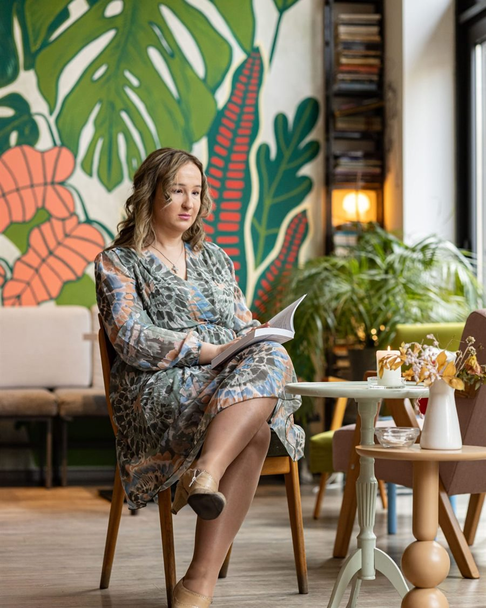

O meni
Umetnost života — moja priča kao psihologa i psihoterapeuta u Rumi
Verujem da prave promene dolaze kroz prirodan razgovor, razumevanje i povezivanje — a ne kroz napor.

Moje ime je Sanja Grubor. Psiholog sam, psihoterapeut i kouč, a moja misija je da kroz znanje, autentičan pristup i celim bićem doprinesem razvoju ljudi i zajednice.
Iza mene su akademske studije psihologije, edukacije iz sistemske porodične terapije, emocionalne i energetske transformacije, psihoanalitičke integralne terapije, kao i razne druge obuke i bogato iskustvo u radu s decom, odraslima i porodicama. Posebno me inspirišu partnerski i međuljudski odnosi jer oni oblikuju naše živote.
Još od najranijih godina izražavala sam svoju kreativnost kroz pisanje, crtanje, muziku i istraživanje psihologije. Ljudi su mi se oduvek obraćali za pomoć, a kroz studije i profesionalne edukacije razvila sam veštine razumevanja, procene i vođenja kroz promene.
Kao majka dvoje dece i kreativna osoba koja voli umetnost, knjige i pisanje, u rad unosim i toplinu i profesionalizam. Moja praksa se zasniva na integrativnom pristupu — primenjujem različite tehnike, prilagođavam se svakom klijentu i zajedno stvaramo prostor za rast.
Neprestano radim i na svom ličnom i stručnom razvoju, istražujući nove pristupe i saznanja. Verujem da je rast proces koji nikada ne prestaje — ni za mene, ni za one s kojima radim.
Radno iskustvo i specijalizacije
- Višegodišnje iskustvo u radu s decom, mladima, roditeljima, pojedincima i parovima.
- Posebna ekspertiza u oblasti partnerskih odnosa, porodične dinamike i ličnog rasta.
- Iskustvo rada sa žrtvama nasilja, osobama koje su preživele traumu, osobama sa invaliditetom i marginalizovanim grupama.
- Integrativni pristup koji uključuje sistemsku porodičnu terapiju, tehnike kognitivne terapije, art terapije, psihodrame, psihodinamskog koučinga (EET) i psihoanalitičke integralne terapije.
- Iskustvo rada u školi i zajednici na projektima podrške deci i mladima.
- Angažman u nevladinim organizacijama — organizacija i vođenje radionica za decu i odrasle.
- Koordinacija i implementacija različitih projekata iz oblasti mentalnog zdravlja i obrazovanja.
- Objavljeni naučni radovi iz oblasti psihologije.
Dodatne edukacije i usavršavanja
- Edukacije o visokoj senzitivnosti, radu sa snovima, primeni projektivnih tehnika i asocijativnih kartica.
- Psihodramske tehnike i tehnike kognitivne i porodične terapije u radu sa decom.
- Obuke iz asertivne komunikacije, posredovanja u konfliktima, organizacije, planiranja i timskog rada.
- Veštine izvođenja radionica, primene inkluzivnog obrazovanja i metoda i tehnika učenja.
- Trening za prevladavanje stresa i druge specijalizovane edukacije.
- Prisustvo stručnim skupovima i konferencijama psihoterapeuta.
Terapija nije nešto što radite — već nešto što doživljavate.
Više o oblicima podrške koje pružam možete pronaći u odeljku Kako vam mogu pomoći.